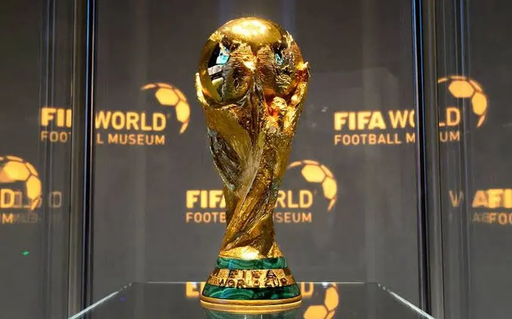

COPA DO MUNDO
Essa é a taça da copa do mundo. Ela possui ouro 18 K (mistura de ouro, prata e cobre) e o minério malaquita.
O que é a copa do mundo?
A Copa do Mundo, a maior competição de futebol que existe atualmente, é organizada pela Fifa a cada quatro anos. Ao todo, aconteceram 21 edições da Copa do Mundo. Os únicos anos em que não houve o evento foram os de 1942 e 1946, devido à Segunda Guerra Mundial.
Sua origem
O evento é uma criação do francês Jules Rimet, ex-presidente da FIFA, que em 1928 instituiu a primeira edição para ser realizada dois anos depois, em 1930. Ao vencedor, seria entregue a taça que levava o nome do então mandatário, e a posse do troféu em definitivo iria para a primeira seleção que fosse tricampeã.
Vencedores:
- Brasil: 5 Títulos;
- Itália: 4 Títulos;
- Alemanha: 4 Títulos;
- Argentina: 3 Títulos (campeão de 2022);
- Uruguai: 2 Títulos;
- França: 2 Títulos;
- Inglaterra: 1 Título;
- Espanha: 1 Título.
Como funciona a copa
As 32 seleções são distribuídas em 8 chaves com 4 times cada. Os vencedores das quartas avançam para a semifinal. Os times que perdem a semifinal, disputam o 3º lugar. Os times que vencem a semifinal disputam a grande FINAL.
Proxima copa!
A Copa de 2026 será a primeira na história com 48 seleções, 16 a mais do que na edição anterior, de 2022 no Catar. A competição acontecerá em 16 cidades-sede, de Canadá, Estados Unidos e México. A primeira fase terá 12 grupos com quatro seleções cada, dos quais avançam as duas melhores.